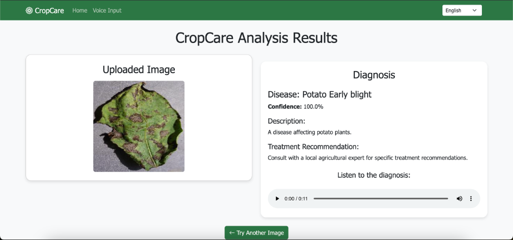
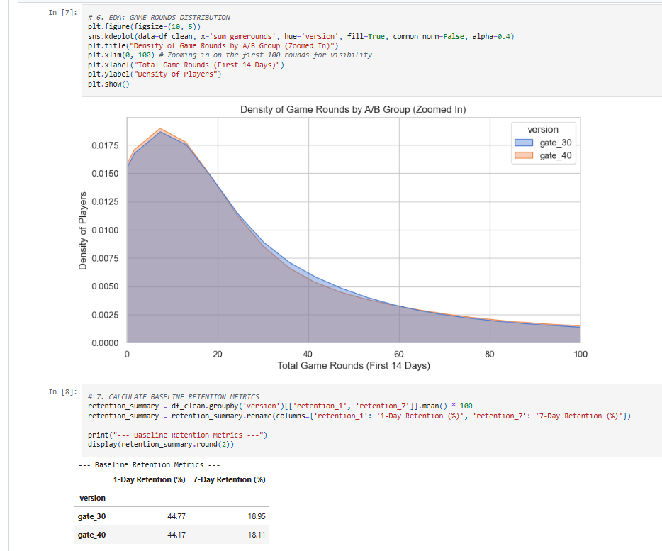

hello,
my name is
irenexjoseph.
I am an aspiring Data Scientist and business Analyst.
I love transforming data into strategic business value with the occasional habits of finding actionable evidence and creating insights.
I am an aspiring Data Scientist and business Analyst.
I love transforming data into strategic business value with the occasional habits of finding actionable evidence and creating insights.
Engineered an ML pipeline via SQL Server and Python to predict customer attrition. Isolated 1,270 high-risk accounts to protect $82,500 in monthly revenue.
View Repository
Architected a machine learning framework designed to deliver data-driven agricultural insights. Optimized predictive models to support sustainable farming.
View Repository
Conducted robust statistical retention analysis in Python for over 90,000 game players. Executed data simulations that proved original design superiority.
View Repository